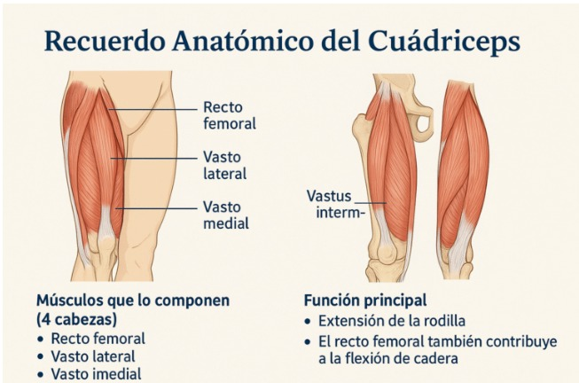
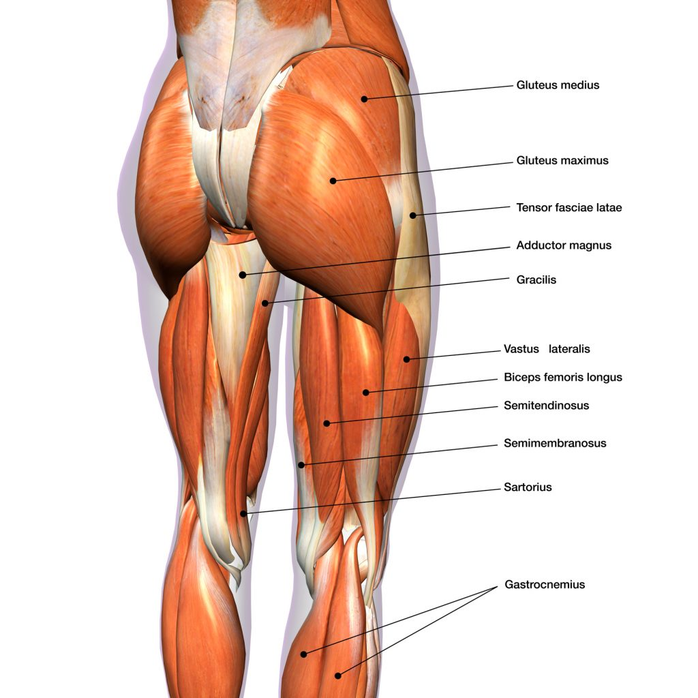
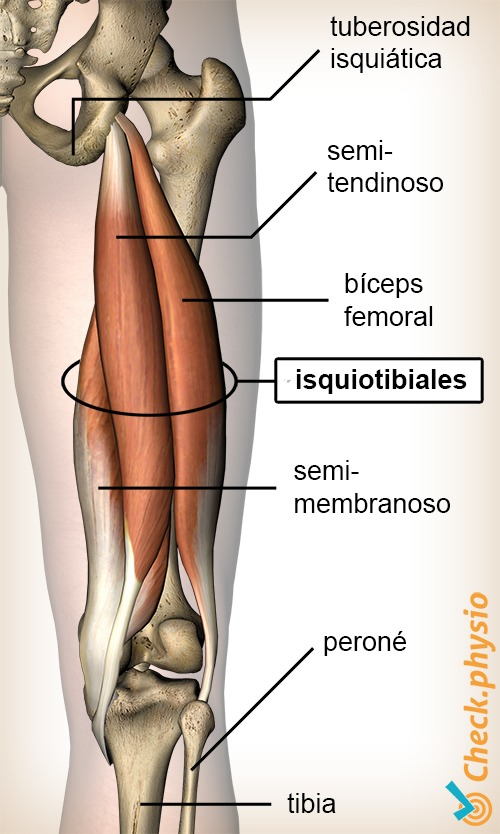
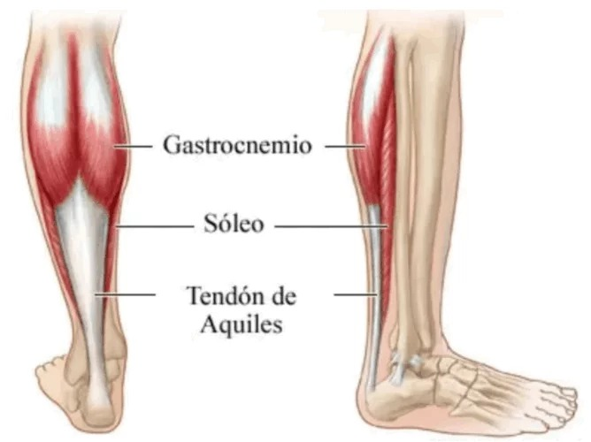
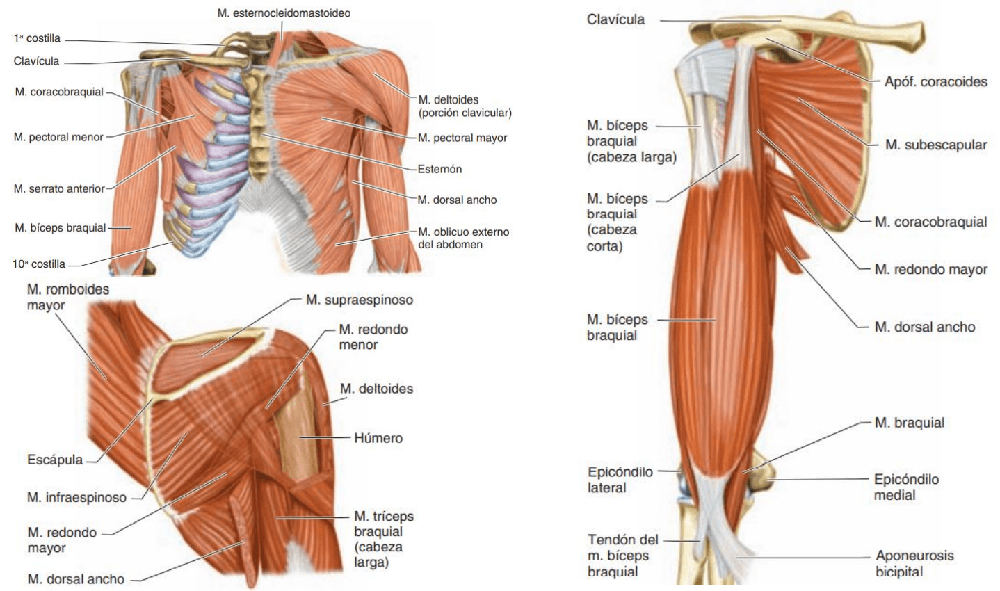

ANATOMÍA & BIOMECÁNICA
El pedaleo coordina grupos musculares y articulaciones para beneficios estéticos y de salud
INVENTARIO MUSCULAR
CUÁDRICEPS
Vasto interno, externo, recto femoral
Músculos frontales del muslo. Se activan al empujar el pedal hacia abajo.
GLÚTEOS
Glúteo mayor y menor
El glúteo mayor se activa en la extensión de cadera, aportando potencia en la bajada.
ISQUIOTIBIALES
Bíceps femoral y semitendinoso
Ayudan a flexionar la rodilla y estabilizar en la fase de levantamiento.
PANTORRILLAS
Gastrocnemio y Sóleo
Ayudan a empujar y levantar el pedal, especialmente al final del movimiento.
ESTABILIZADORES
- Aductores: Mantienen estable la pierna.
- Tibial Anterior: Levanta la punta del pie.
- Abdominales/Lumbares: Mantienen postura y evitan balanceo.
TREN SUPERIOR
Hombros (deltoides), tríceps y antebrazos mantienen el equilibrio y la estabilidad del manubrio.
ANÁLISIS DE FASES
1. FASE DE EMPUJE (0°–180°)
Generación principal de potencia. Desde el punto superior hasta el inferior.
- Cuádriceps: Extienden la rodilla. Contracción concéntrica para generar potencia. Al acercarse al punto bajo (150°-180°), actúan de forma excéntrica para frenar la extensión y evitar hiperextensiones.
- Glúteo Mayor: Extensión de cadera, contracción mayormente concéntrica.
- Gastrocnemio/Sóleo: Flexión plantar del tobillo para transmitir fuerza eficazmente.
- Aductores: Controlan movimientos laterales y alineación.
2. FASE DE RECUPERACIÓN (180°–360°)
Asistencia y retorno. El ciclista eleva la pierna.
- Isquiotibiales: Flexionan la rodilla para que el pedal ascienda (180° a 270°). Activación concéntrica.
- Tibial Anterior: Dorsiflexión (levanta la punta del pie) para reducir resistencia.
- Aductores/Glúteo Menor: Mantienen la rodilla alineada para un movimiento suave.
TRONCO Y TREN SUPERIOR
Trabajan de manera isométrica (sin movimiento) para estabilizar la pelvis. Los brazos absorben vibraciones. Su función no es potencia, sino control.
Nota: Debilidad aquí causa dolor lumbar y gasto energético extra.

FIG 1: FASES MECÁNICAS
RESUMEN TÉCNICO
| Músculo | Fase | Acción Biomecánica |
|---|---|---|
| Cuádriceps | Empuje | Extensión Rodilla (Concéntrica/Excéntrica) |
| Glúteo Mayor | Empuje | Extensión Cadera (Potencia) |
| Isquiotibiales | Recuperación | Flexión Rodilla (Concéntrica) |
| Tibial Ant. | Recuperación | Dorsiflexión Tobillo |
ANÁLISIS DE VIDEO
BENEFICIOS FISIOLÓGICOS
Requisito: Mínimo 30 minutos, 2 veces por semana a intensidad superior al umbral aeróbico.
1. CEREBRO Y ESTRÉS
- Aumenta capacidad aeróbica y pulmonar.
- Intercambio de gases (O2/CO2) más eficiente.
- Hormonas: Facilita oxigenación y creación de endorfina, dopamina y serotonina (al aire libre). Combate estrés y mejora ánimo.
2. CORAZÓN Y CIRCULACIÓN
Eleva umbral aeróbico/anaeróbico. El corazón bombea con más fuerza, fortaleciendo vasos sanguíneos y bajando frecuencia cardíaca en reposo.
LDL (Colesterol Malo): Lipoproteína de baja densidad. Si es alto, se acumula en arterias y forma placas.
HDL (Colesterol Bueno): Transporta exceso de colesterol al hígado para eliminarlo. Reduce riesgo de accidentes cerebrovasculares.
3. SISTEMA INMUNOLÓGICO
Produce fagocitos (células que atacan bacterias). Reduce probabilidad de enfermarse.
- Mantiene niveles de azúcar en sangre.
- Reduce hasta un 20% riesgo de diabetes tipo 2 y enfermedades cardíacas.
4. ARTICULACIONES Y MÚSCULOS
- Articulaciones: Difusión de nutrientes en cartílagos gracias al movimiento sin impacto de peso. Articulaciones sanas y protegidas.
- Músculos: Fortalece extremidades inferiores y tonifica zona abdominal por la regularidad intensa.
Nota: No habrá beneficios si el asiento o manubrio están mal acomodados.
ÚNETE AL MOVIMIENTO
Recibe información sobre biomecánica y salud.